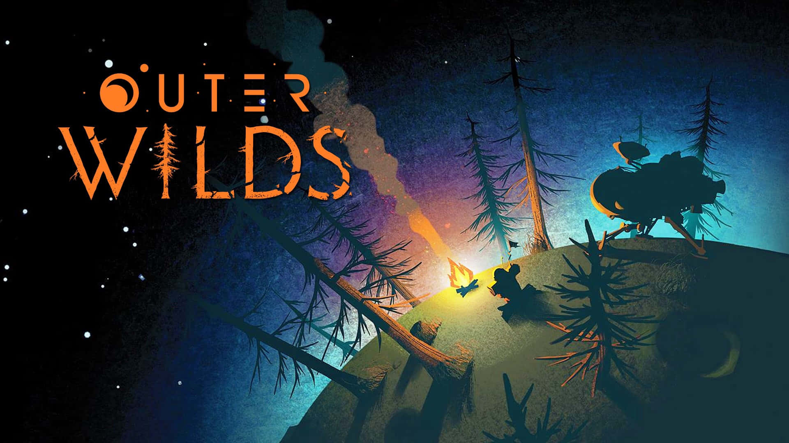
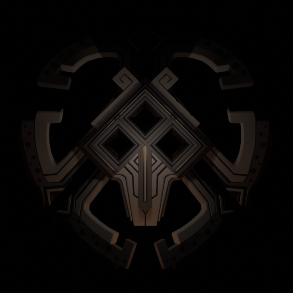
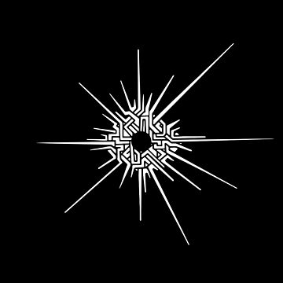
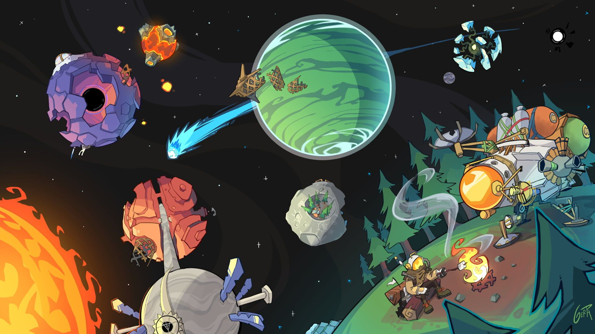

Bienvenue sur Cards To The Eye, un site dédié aux explorateurs et collectionneurs passionnés
par l'univers unique d'Outer Wilds !




Plongez dans une galaxie de cartes des merveilles cosmiques du système solaire d'Outer Wilds,
des mystères anciens et des énigmes fascinantes du jeu.
Ici, chaque carte est une porte d’entrée vers des souvenirs,
des découvertes et des aventures qui capturent l’essence de cet univers intrigant.
Que vous soyez à la recherche de cartes rares, de clins d'œil à vos personnages préférés,
Cards To The Eye est là pour rassembler tout ce qui rend Outer Wilds inoubliable.
Préparez-vous à explorer l’inattendu et à enrichir votre collection !
ATTENTION !!! Ce site contient des spoilers pour Outer Wilds et ses énigmes,
si vous comptez jouer au jeux (ce que vous devriez faire) il est conseiller de ne pas consulter les détails des cartes